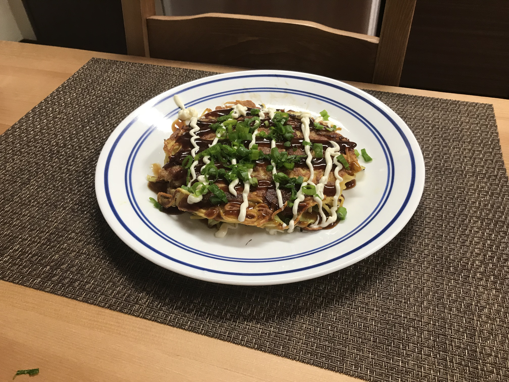

Bacon Okonomiyaki

Description
Ingredients
- 4 eggs
- 1/2 cup water
- 1/2 cup all-purpose flour
- 2 teaspoons soy sauce
- 1 teaspoon baking powder
- 1 teaspoon salt
- 3 tablespoons vegetable oil
- 1 onion, diced
- 2 cups shredded cabbage
- 8 ounce dried soba noodles
- 8 ounce chopped bacon
Steps
- Mix eggs, water, flour, soy sauce, baking powder, and salt together to make the batter.
- Heat oil in a pan over medium heat. Add onion; cook until soft and translucent, about 5 minutes. Add to the batter. Cook cabbage in the same pan until slightly wilted, 5 to 7 minutes. Add to the batter.
- Bring a large pot of water to a boil. Cook soba in boiling water, stirring occasionally, until noodles are tender yet firm to the bite, 5 to 7 minutes. Drain and cut noodles into shorter pieces; add to the batter.
- Heat a flat frying pan over medium-high heat. Cook 1/4 cup of bacon until starting to crisp, 2 to 3 minutes. Arrange it in a small circle in the middle of the pan; add 1 cup of the batter. Cook until brown and crispy, flipping pancake halfway and pressing down with a spatula, about 5 minutes per side. Repeat with remaining bacon and pancake batter.